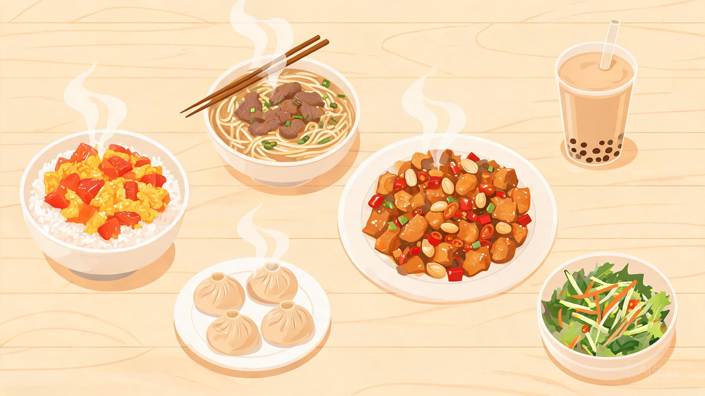

吃
嘛
？

我的饮食偏好
（可不填，随意聊聊）
减脂轻食
预算 15 元
不吃辣
无肉不欢
来碗面
清淡养生
建立口味档案
替我决定！
试试新的！
选择困难？让我来拍板
写下偏好，或直接点下面的按钮
先认识一下你的口味
选几项就好，随时可以改；不想选也可以直接跳过。
×
喜欢的口味
可多选
辣
麻
酸甜
咸鲜
清淡
甜
荤素倾向
都行
偏素
无肉不欢
每顿预算
≤10 元
10-15 元
15-20 元
不限
避雷
可不填
显示模式
单卡
三卡
三卡一次给三个不同档口，点“整组换一个”一起刷新。
先跳过，直接点菜
保存偏好